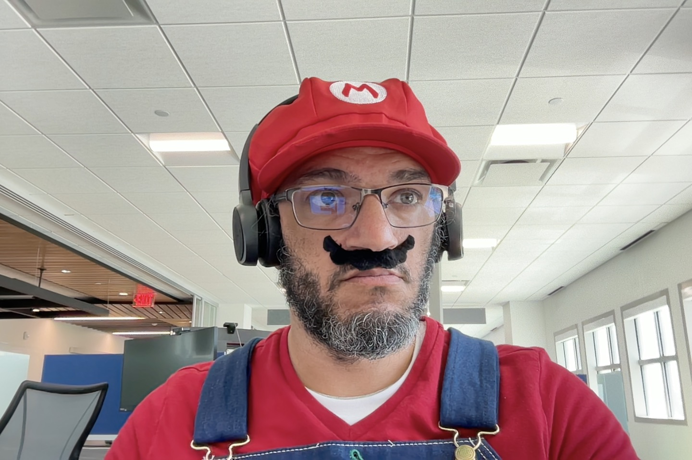

Summary
The Objective of this is to showcase not just my humor but also my coding skills
Education
- BA in Computer Science, NMSU
- Certified in Front End and Back End developement, Flatiron School
Work Experience
- HelpDesk for Cisco
- Genius/Mac Technician for Apple
Skills
- Coding
- Laughing
- Emotional Support
- Technical Specialist
